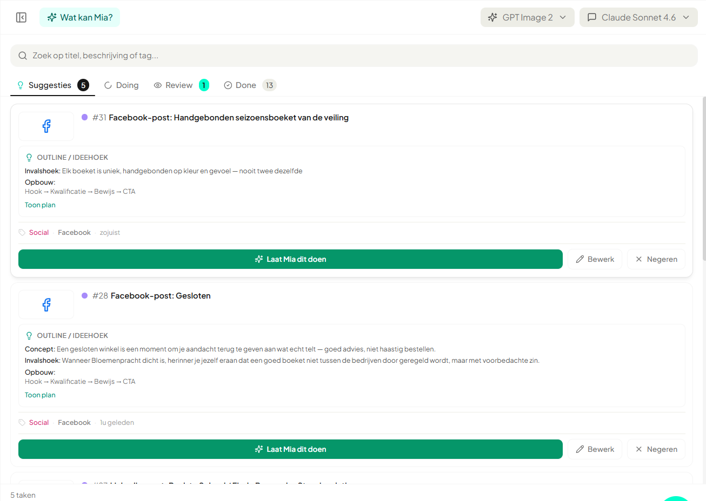
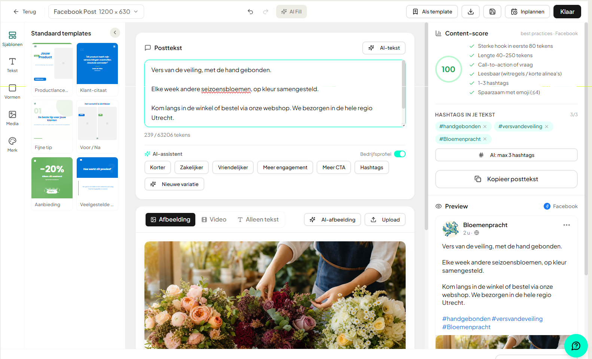
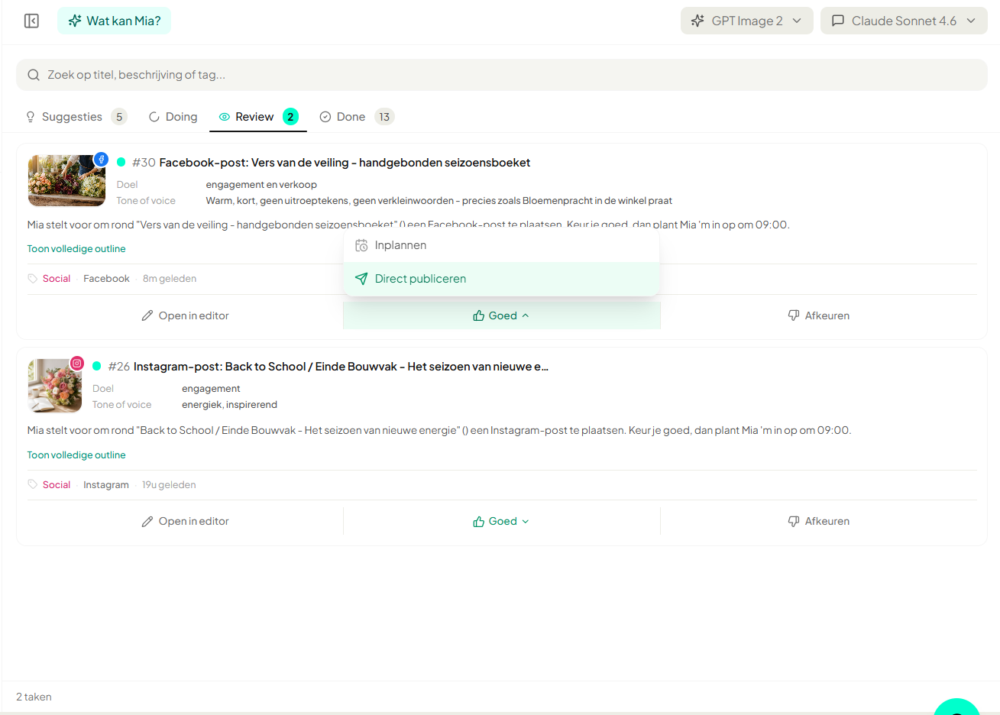
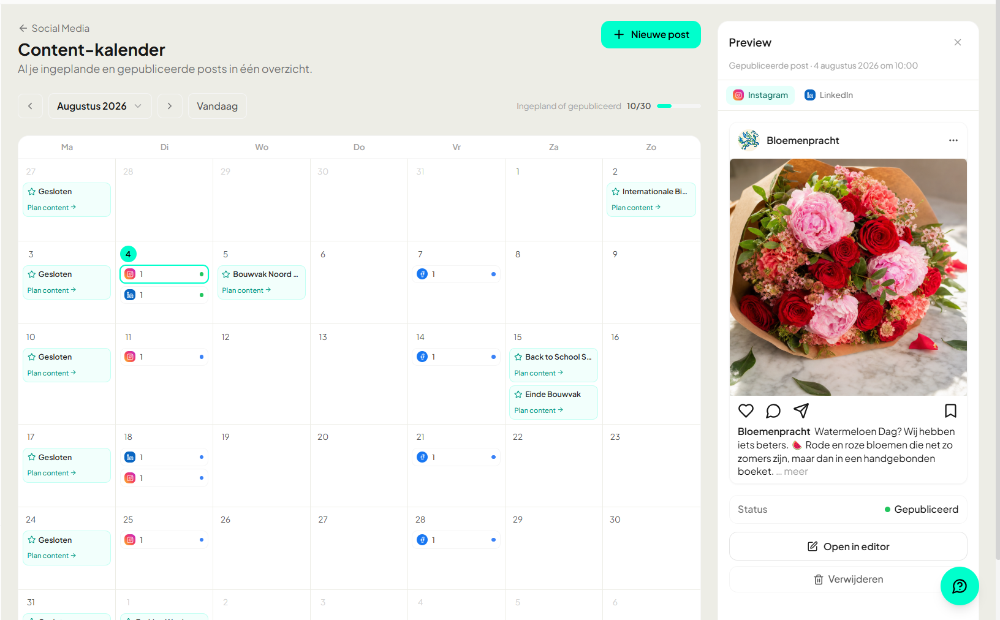

Social posts, zonder dat jij erbij hoeft na te denken.
Mia kijkt in je kalender en zet de posts klaar in jouw merkstijl. Jij keurt goed, Mia plant ze in of plaatst ze zelf. Voor Instagram, LinkedIn en Facebook.
De schermen hieronder komen uit HQ zelf. Klik erop om ze groot te bekijken. In dit voorbeeld zie je een bloemenzaak, in jouw HQ staat je eigen bedrijf.
1 Mia stelt voor
Op basis van je kalender zet Mia posts klaar.
Feestdagen, acties of vaste momenten: Mia bedenkt waar een post bij past en zet het voorstel klaar bij je taken, met de invalshoek erbij. Jij hoeft niet te bedenken wat je moet plaatsen.

2 Jij controleert
Links de tekst, rechts een score.
Mia schrijft in jouw toon en let op bereik. Een contentscore laat zien of de post sterk genoeg is, met punten als een goede hook, de juiste lengte en passende hashtags. Naast stilstaand beeld kan ze van je eigen foto’s ook een korte video maken. Wil je iets anders, dan pas je het aan met een klik.

3 Jij keurt goed
Eén klik op Goed. Meer hoef je niet te doen.
Klopt het? Dan kies je of Mia ’m inplant of meteen publiceert. Niet goed? Eén klik op Afkeuren en Mia komt met een nieuw voorstel. Niets gaat online zonder jouw akkoord.

4 Mia plant in
Op het juiste moment, of meteen.
Laat Mia een slim moment kiezen, of pak zelf de datum en tijd. In de kalender zie je in één oogopslag wat er staat en waar nog een gat zit. Daarna hoef je er niet meer naar om te kijken.

En zo ziet het eruit als 'ie live staat.
Een afgeronde post, in jouw stijl, klaar voor je volgers.

Mia doet je social. Jij keurt goed.
Aan de slag vanaf €79 per maand. De eerste keer instellen kost ongeveer 10 minuten.